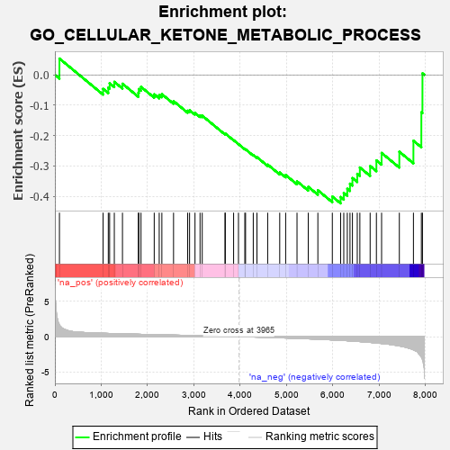
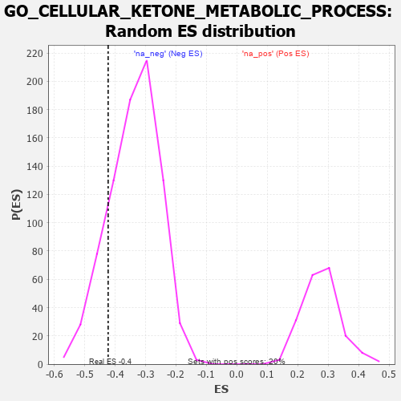

| | | Dataset | 7d |
| Phenotype | NoPhenotypeAvailable |
| Upregulated in class | na_neg |
| GeneSet | GO_CELLULAR_KETONE_METABOLIC_PROCESS |
| Enrichment Score (ES) | -0.42291516 |
| Normalized Enrichment Score (NES) | -1.2506768 |
| Nominal p-value | 0.15403727 |
| FDR q-value | 0.5448551 |
| FWER p-Value | 1.0 |
Table: GSEA Results Summary

Fig 1: Enrichment plot: GO_CELLULAR_KETONE_METABOLIC_PROCESS
Profile of the Running ES Score & Positions of GeneSet Members on the Rank Ordered List
| PROBE | GENE SYMBOL | GENE_TITLE | RANK IN GENE LIST | RANK METRIC SCORE | RUNNING ES | CORE ENRICHMENT | | 1 | IRS1 | | | 98 | 1.659 | 0.0538 | No |
| 2 | AKT1 | | | 1040 | 0.476 | -0.0460 | No |
| 3 | PSMD7 | | | 1152 | 0.454 | -0.0419 | No |
| 4 | PSMD2 | | | 1181 | 0.450 | -0.0275 | No |
| 5 | COQ8B | | | 1282 | 0.434 | -0.0228 | No |
| 6 | COQ5 | | | 1458 | 0.398 | -0.0290 | No |
| 7 | COQ2 | | | 1801 | 0.337 | -0.0588 | No |
| 8 | PSMD4 | | | 1811 | 0.335 | -0.0465 | No |
| 9 | PSMD6 | | | 1858 | 0.326 | -0.0393 | No |
| 10 | PSME4 | | | 2143 | 0.285 | -0.0638 | No |
| 11 | PSMF1 | | | 2251 | 0.268 | -0.0666 | No |
| 12 | REST | | | 2308 | 0.259 | -0.0634 | No |
| 13 | PSMD5 | | | 2560 | 0.218 | -0.0864 | No |
| 14 | WDTC1 | | | 2865 | 0.172 | -0.1179 | No |
| 15 | PPTC7 | | | 2906 | 0.164 | -0.1164 | No |
| 16 | WNT4 | | | 3023 | 0.146 | -0.1252 | No |
| 17 | COQ3 | | | 3132 | 0.133 | -0.1335 | No |
| 18 | PSMD9 | | | 3179 | 0.125 | -0.1343 | No |
| 19 | COQ4 | | | 3670 | 0.048 | -0.1942 | No |
| 20 | ABCD1 | | | 3677 | 0.047 | -0.1931 | No |
| 21 | DGKQ | | | 3856 | 0.020 | -0.2148 | No |
| 22 | NCOR1 | | | 3961 | 0.000 | -0.2279 | No |
| 23 | PDP2 | | | 4098 | -0.023 | -0.2441 | No |
| 24 | MTOR | | | 4114 | -0.025 | -0.2450 | No |
| 25 | PSME3 | | | 4280 | -0.056 | -0.2636 | No |
| 26 | ACADL | | | 4360 | -0.069 | -0.2708 | No |
| 27 | PNKD | | | 4591 | -0.116 | -0.2952 | No |
| 28 | DHRS4 | | | 4851 | -0.168 | -0.3212 | No |
| 29 | COQ6 | | | 4979 | -0.193 | -0.3295 | No |
| 30 | CLCN2 | | | 5224 | -0.250 | -0.3503 | No |
| 31 | CPT1A | | | 5467 | -0.311 | -0.3684 | No |
| 32 | PSMD1 | | | 5674 | -0.367 | -0.3798 | No |
| 33 | SCAP | | | 5986 | -0.466 | -0.4005 | No |
| 34 | EGR1 | | | 6165 | -0.527 | -0.4019 | Yes |
| 35 | RGN | | | 6233 | -0.547 | -0.3885 | Yes |
| 36 | KDSR | | | 6309 | -0.579 | -0.3749 | Yes |
| 37 | ACMSD | | | 6367 | -0.603 | -0.3580 | Yes |
| 38 | COQ7 | | | 6420 | -0.628 | -0.3395 | Yes |
| 39 | PLIN5 | | | 6524 | -0.672 | -0.3258 | Yes |
| 40 | CLN3 | | | 6580 | -0.699 | -0.3048 | Yes |
| 41 | KYNU | | | 6802 | -0.816 | -0.3002 | Yes |
| 42 | GHSR | | | 6937 | -0.894 | -0.2814 | Yes |
| 43 | PIBF1 | | | 7049 | -0.966 | -0.2569 | Yes |
| 44 | KMO | | | 7432 | -1.308 | -0.2530 | Yes |
| 45 | PANK2 | | | 7736 | -1.866 | -0.2168 | Yes |
| 46 | PSMD3 | | | 7907 | -2.887 | -0.1231 | Yes |
| 47 | PSMD8 | | | 7931 | -3.286 | 0.0050 | Yes |
Table: GSEA details [plain text format]

Fig 2: GO_CELLULAR_KETONE_METABOLIC_PROCESS: Random ES distribution
Gene set null distribution of ES for GO_CELLULAR_KETONE_METABOLIC_PROCESS